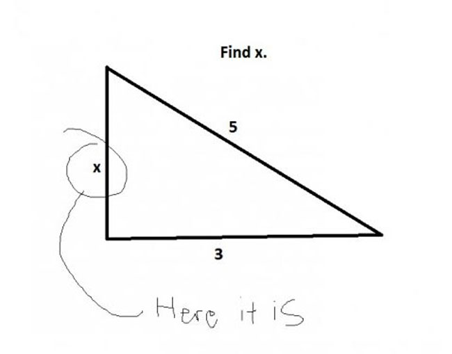
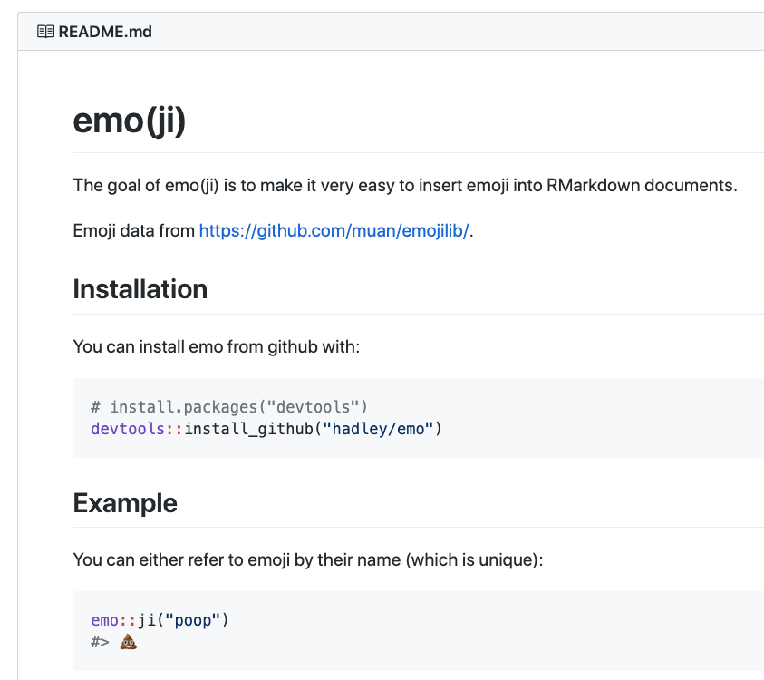

2 Topic 2: R and R Markdown
Overview
Goals: - Learn the basics of the R programming language - Learn the basics of Markdown writing - Learn how to combine R code and markdown text to create RMarkdown documents
Outcomes: - TBD - Create RMarkdown summary document of things we learned today!
Don’t worry
The funniest thing about this is that the time scale could be one day or the past 5 years.
— C.B. Standelmore ((???)) December 4, 2019
p.s. Allison Horst’s R illustrations are amaaaazing and I will be using them throughout.
2.1 R
Recap: Console and script panes in RStudio
2.1.1 Objects in R
Everything in R is an “object”
2.1.2 Variables
variable: a symbol that stores/represents some other value or set of values.
Think of variables as containers.

2.1.2.1 Variable assignment
Variables get assigned their value in R with a left arrow <-
- Numeric variables represent numbers
x <- 5
This means the value of the variable we have named
xis equal to 5.String variables represent “strings” of text. Text has to be enclosed in quotes
""
my_var <- “hello”
- This means the value of the variable
my_varis equal to the text “hello”.
2.1.2.2 What do I name my variables?
- In R, it’s pretty flexible. Not as flexible in other languages (*cough* Praat *cough*)
General rules:
| Not allowed | Why |
|---|---|
| 1abc | Starts with a number |
| intelligibility% | Contains a special character like !@#$%^&*, etc. |
| .1my_var | Starts with a period followed by a number (.1 |
| _my_var | Starts with an underscore (_) |
| special characters | Some words have special meaning to R and you shouldn’t overwrite them (e.g., “mean”) |
Best practices in naming your variables
Some suggestions
Try your best to…
- Be descriptive
- Be consistent in your content
- Be consistent in your case (camel/snake/etc)
- Jenny Bryan’s “Naming Things” slides (applies more to filenames…)

| Allowed | Good because | Bad because |
|---|---|---|
| x | short, lowercase | Not meaningful |
| intelligibility_scores | meaningful, easy to remember | Takes a long time to type |
| int_mean | meaningful, short | 🤷 |
| int_mean_pd, int_mean_hc | meaningful, shortish, descriptive | A bit long |
2.1.3 Try it!
2.1.3.1 Numeric variables
In your console, do the following:
- Create a variable x and assign it a value of some number
- Create a variable of y and assign it a value of some other number
- Create some other variable (name it whatever you like!) and assign it a value of yet another number
2.1.3.2 String variables
In your console, do the following:
- Create a variable
aand assign it a value of some text (don’t forget to enclose the text in quotes!) - Create a variable
band assign it a value of some other text - Create a variable with another name and assign it yet another text value
2.1.4 Types of data
- Numeric
- Integers (whole numbers)
- Strings: collection of characters
- e.g., “abc”, “the rainbow is a division of white light”
- numbers and other non-letter characters can also be treated as strings
- Factors: categorical variables. Make up a finite set
- e.g., “Blue” “Green” “Red”
- Logicals: special kind of factor that only has two values
- TRUE vs FALSE, 0 vs 1
2.1.5 Types of data structures
- Data frames: collections of vectors
- Vectors: collection of similar elements (numbers, characters, factors, etc..)
- Matrices
- Lists
- Arrays
2.1.7 R Packages & Libraries
Packages are bundles of code written to do (typically) specific sets of functions
- Some packages are automatically downloaded and loaded into your workspace when you install R
- Others you have to explicitly download
- Many packages are hosted on CRAN - this is the official “home” of peer-approved packages
- These can be installed using the function
install.packages().
- These can be installed using the function
- Other packages are not hosted on CRAN - many of these are excellent, but some may be less reliable.
- Many of these are hosted on GitHub.com
- These usually have to be installed using a function
install_github()which is part of thedevtoolspackage.
For example: To install the emo package from Hadley Wickham’s Github page:

2.1.8 Libraries
- Libraries in R refer to where the packages are stored. When you install a new package, it gets automatically saved to a particular location (you don’t need to specify where). When you want to use the contents/functions of a package, you need to “load the library” using the
library()function.
# load the tidyverse package
# expect a bunch of output messages (this is normal)
library(tidyverse) - If you ask R to load a package you don’t have installed, or make a typo in the package name, R will yell at you (give you an error):
## Error in library(tidverse): there is no package called 'tidverse'2.1.9 Functions
Functions: A certain named format of code that outlines a procedure. Often this allows several lines of code to be executed with a single line of code (by using the name of the function)
- In other words, functions are actions.
- Most functions take arguments
- What do you want to act on?
2.1.10 Tidyverse
“The tidyverse is an opinionated collection of R packages designed for data science. All packages share an underlying design philosophy, grammar, and data structures.” www.tidyverse.org
- Changed the game of R coding
- Much more intuitive syntax (IMHO); more “english-like”
- BUT not everyone likes it. Sometimes makes things easier, sometimes makes things more complicated.
- We’ll be using both
- Core packages: ggplot2, dplyr, tidyr, readr, stringr…
2.1.11 Disclaimer
- We will cover both base R and the Tidyverse
2.1.12 Getting started: R Projects
2.2 Application
Open 1_prep_data.R from today’s materials.
2.3 Rmarkdown

The goal of today’s workshop is to establish a workflow for using the rmarkdown package to “knit” together R code and text to create summary documents.
It might seem kind of odd to launch into a workflow that ties together R code and other stuff before we’ve actually had a chance to learn any R code, but here’s the rationale:
- 🛠 Foundational skill: R Markdown document creations can serve as a way to document the rest of our skills. At each workshop, we’ll create another R Markdown document (extension .
Rmd) to log the skills we worked on and any notes you’d like to keep for yourself. In this way, this skill is foundational. - 🙌 Instant gratification! R Markdown documents can be rendered without much working knowledge of R at all. It’s a lovely thing when you can get something up and running RIGHT AWAY
Markdown
Markdown refers to a set of conventions for editing plain text. With markdown syntax, you write as you normally would in a text editor or word processor, but you signal text formatting with certain characters. Markdown (which is distinguished from markUP language) is designed to be easily readable, easy to write, and easy to learn.
*italic*
**bold**
**italic and bold!***
# First level header
## Second level header
### Third level header
1. the first item on a numbered list
2. the second item on a numbered list
- the first item on a bulleted list
- the second item on a bulleted list
- item 2a
Tables look like this:
First Header | Second Header
------------- | -------------
Content Cell | Content Cell
Content Cell | Content CellCode chunks
2.4 More advanced
- inline R code
2.1.6 Comments